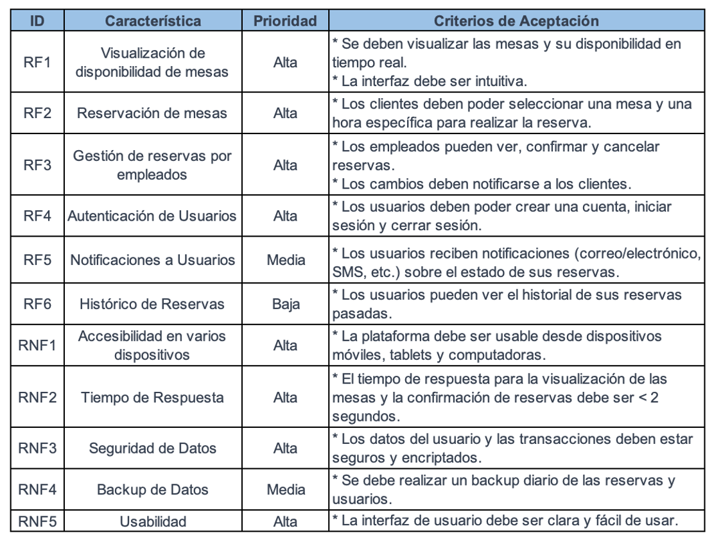
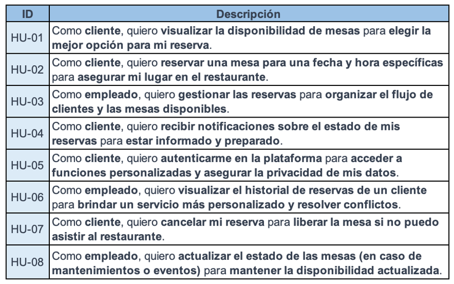
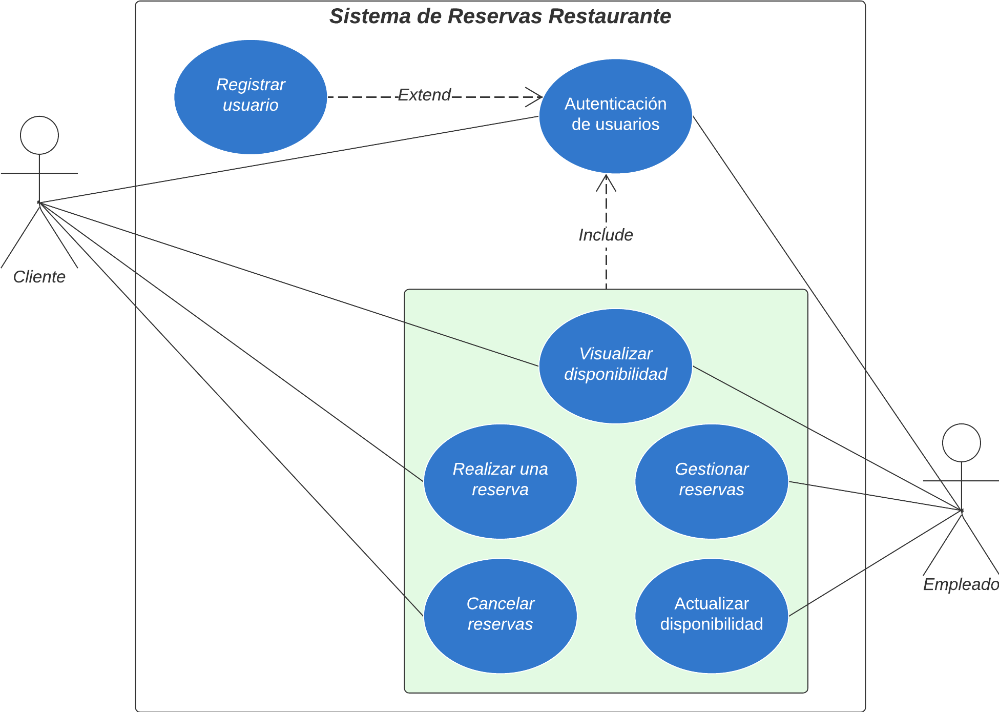
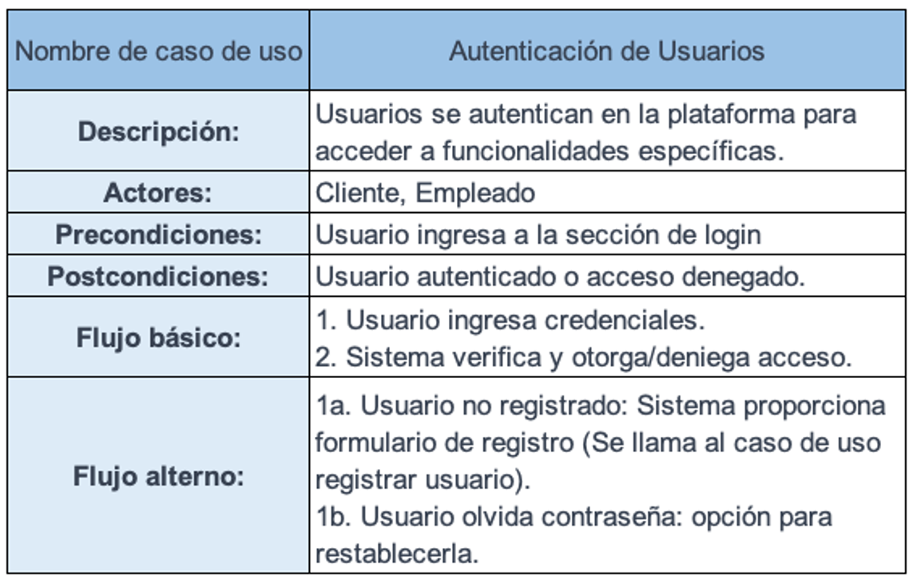
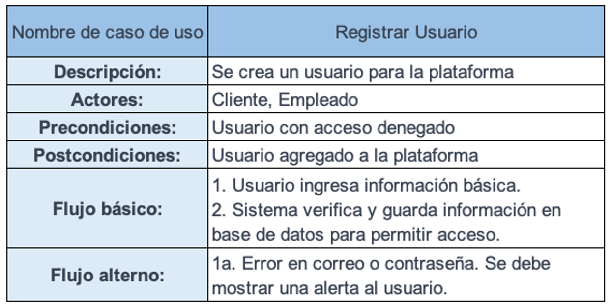
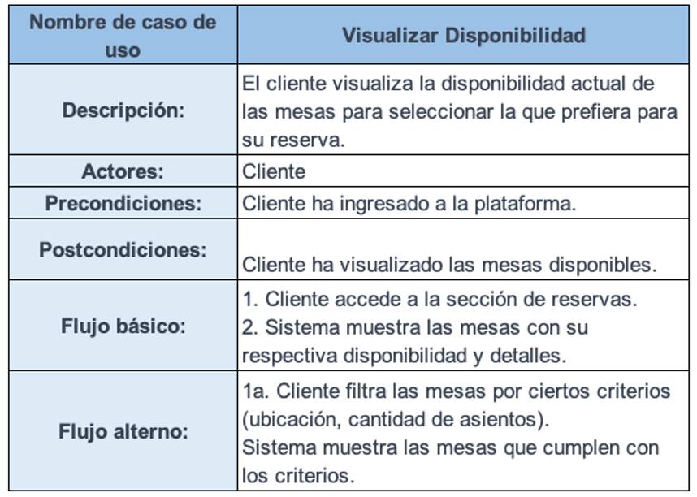
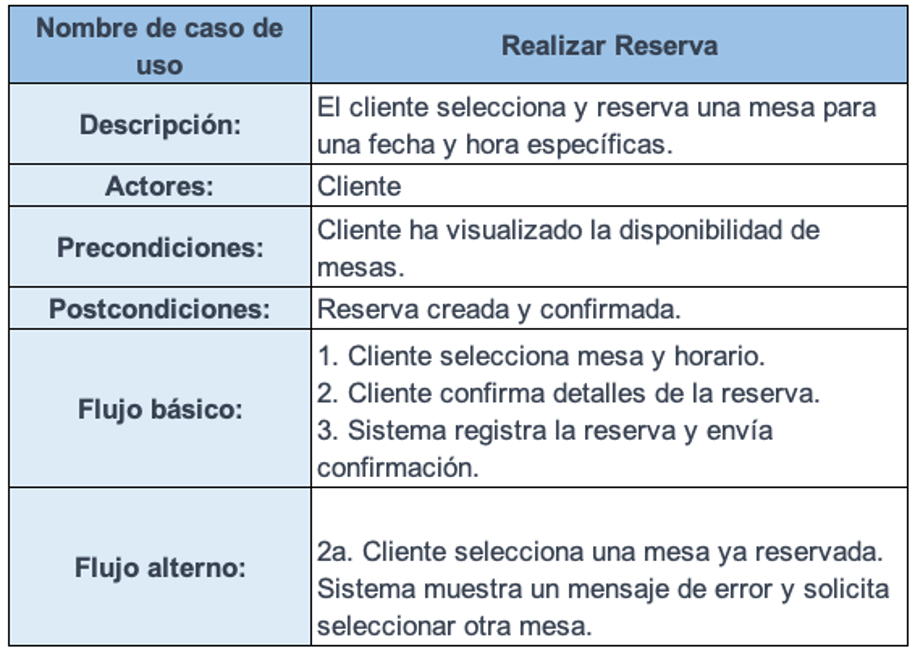
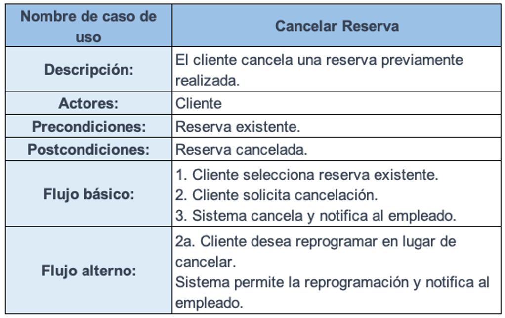
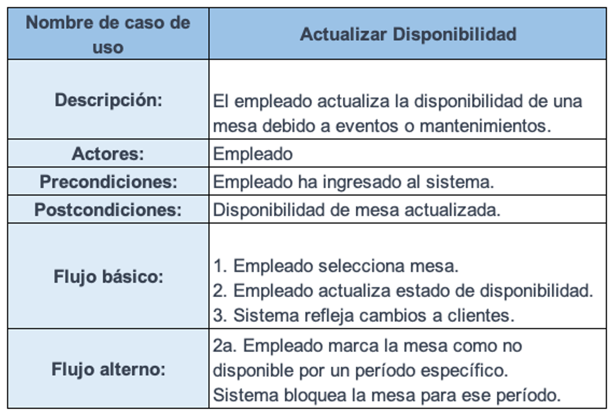
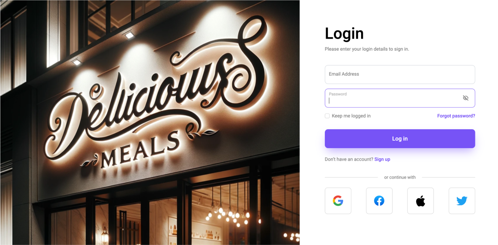

Proceso end-to-end de ejemplo#
Escenario: Plataforma de Reservas para un Restaurante#
🌐🍔👨‍🍳 Necesidad de Negocio:#
La compañÃa “DeliciousMeals†necesita una plataforma que permita a los clientes realizar reservas en lÃnea para mejorar la experiencia del cliente y optimizar la gestión de las reservas.
📘 Proceso de elicitación de requerimientos#
De la necesidad de negocio a los requerimientos…#
📌 Requerimientos funcionales:#
RF1: Los clientes deben poder ver la disponibilidad de mesas.
RF2: Los clientes deben poder reservar una mesa para una fecha y hora especÃficas.
RF3: Los empleados deben poder ver y gestionar las reservas.
📌 Requerimientos NO funcionales:#
RNF1: La plataforma debe ser accesible desde cualquier dispositivo.
RNF2: Tiempo de respuesta del sistema inferior a 2 segundos.
🯠Veamos como quedan los requerimientos.#
✍️🎒 Historias de usuario#
🧠Recordemos el formato:#
Como [rol] quiero [funcionalidad] para [beneficio]
📌 Historias de usuario:#
Pasemos ahora a los casos de uso…#
📌 Casos de uso:#
📠Autenticación de usuarios.
🔠Registrar usuarios.
👀 Visualizar disponibilidad.
✅ Realizar una reserva.
🍽️ Gestionar reservas.
⌠Cancelar reserva.
📆 Actualizar disponibilidad.
👥 Actores del sistema:#
Cliente
Empleado
Veamos como queda el diagrama de casos de uso…#

Debemos realizar el uso de Include y extend…#
📌 Especificación de casos de uso:#
📌 Caso de uso 1: Autenticación de usuarios.#
📌 Caso de uso 2: Registrar usuarios.#
📌 Caso de uso 3: Visualizar disponibilidad.#
📌 Caso de uso 4: Realizar una reserva.#
📌 Caso de uso 5: Gestionar reservas.#

📌 Caso de uso 6: Cancelar reserva.#
📌 Caso de uso 7: Actualizar disponibilidad.#
📌 Mockups:#
📌 Mockup 1: Autenticación de usuarios.#
📌 Mockup 2: Registrar usuarios.#
Proyecto en gihtubPages:#
📘 Actividad en clase:#
Realice en la herramienta figma los mockups de los casos de uso 3, 4, 5, 6 y 7.